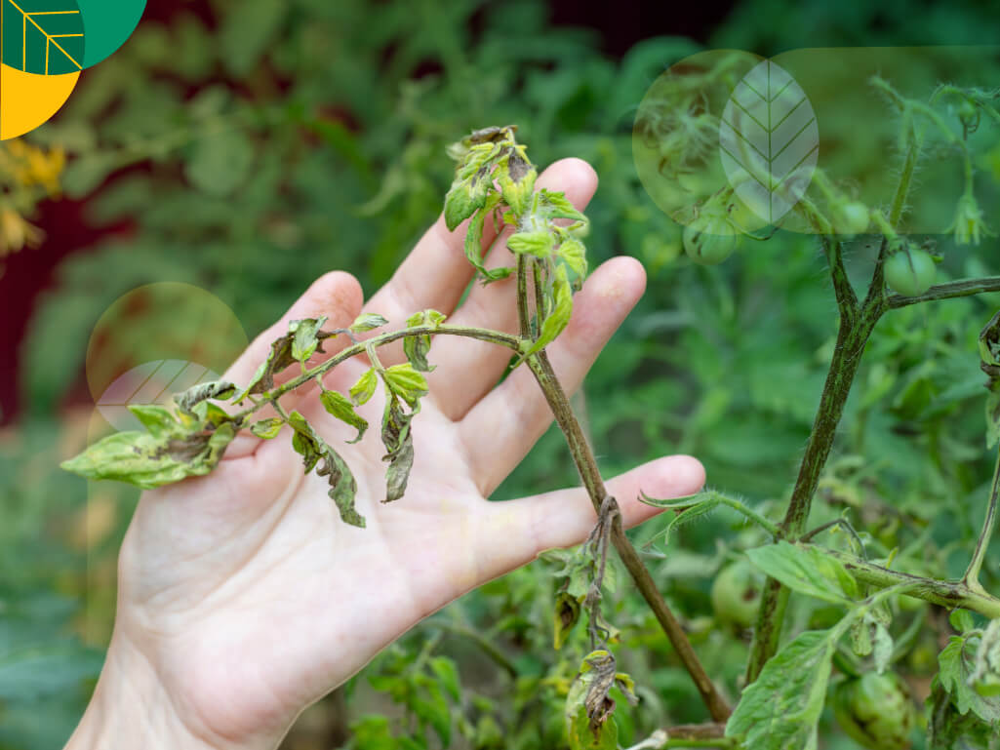

Gejala penyakit Layu Fusarium pada tanaman cabai menyerang jaringan pembuluh dan menyebabkan gangguan penyerapan air. Berikut adalah daftar gejalanya:
| No | Gambar | Gejala | Penjelasan | Ciri Khas |
|---|---|---|---|---|
| 1 | Daun Menguning | Daun bagian bawah berubah warna menjadi kuning akibat gangguan nutrisi. | Menyebar dari daun tua ke daun muda secara bertahap. | |
| 2 | Daun Layu | Daun kehilangan turgor dan menggantung meskipun tanah cukup lembab. | Layu menetap meskipun disiram, lebih parah saat siang hari. | |
| 3 | Batang Membusuk | Bagian bawah batang berwarna hitam, terasa lunak dan bau busuk. | Sering menyebabkan tanaman roboh bila ditekan. | |
| 4 | Batang Menguning | Perubahan warna batang menjadi kuning karena terganggunya aliran air. | Disertai garis-garis coklat pada batang bagian dalam. | |
| 5 |  | Tanaman Layu | Seluruh bagian tanaman tampak lemas, layu, dan tidak tegak. | Layu menyeluruh meskipun tanah dalam kondisi lembab. |